Gallery
 YCAS member Jim Smailing has taken some excellent pictures of the eclipsing Moon. These pictures were taken with the combination of a Motorola E5 plus cellphone, a Vankey cellphone telescope adapter mount, and an Orion ultrascopic 5mm eyepiece all attached to an Orion Skywatcher 120 f/8 acromatic refractor on an EG-3 equatorial mount with an Orion EQ-3M single axis drive. The first six photos were taken with a #15 yellow glass filter attached to the eyepiece.
The picture above is a stacked photo from a 30 second video processed with the free software PIPP and Autostakkkert!2.
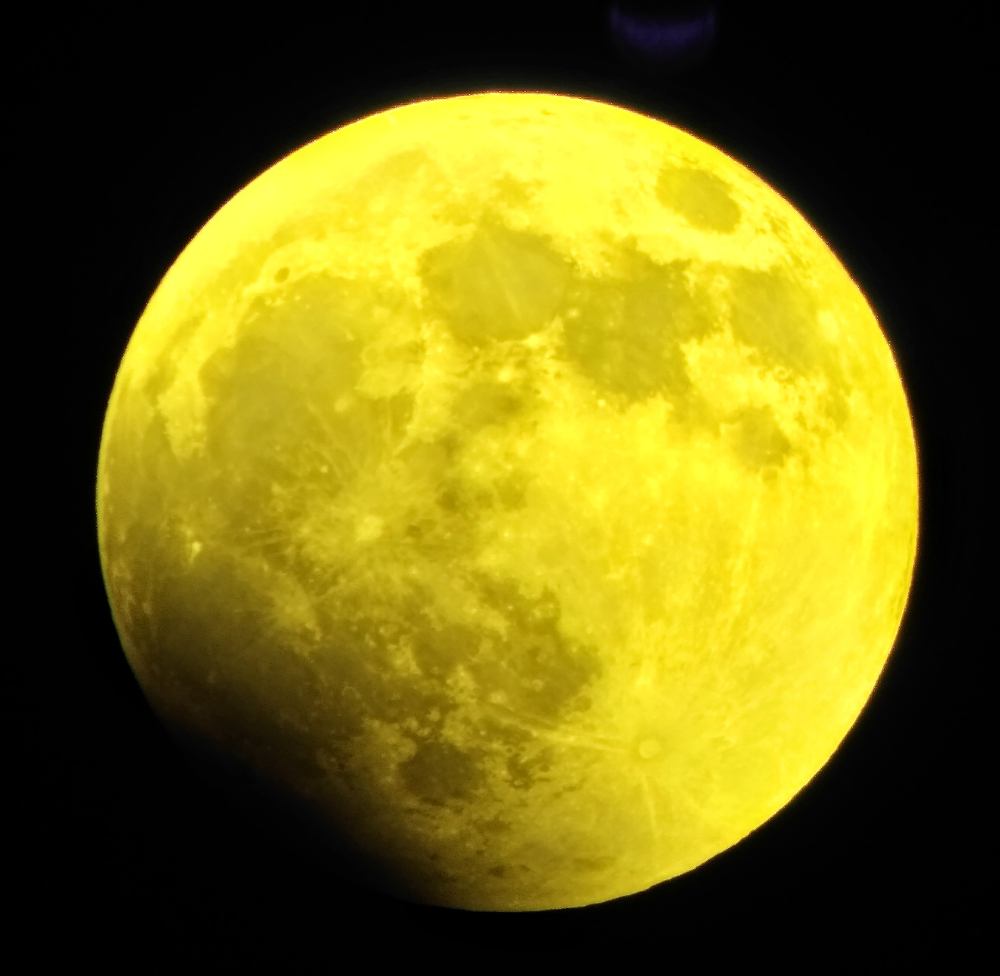 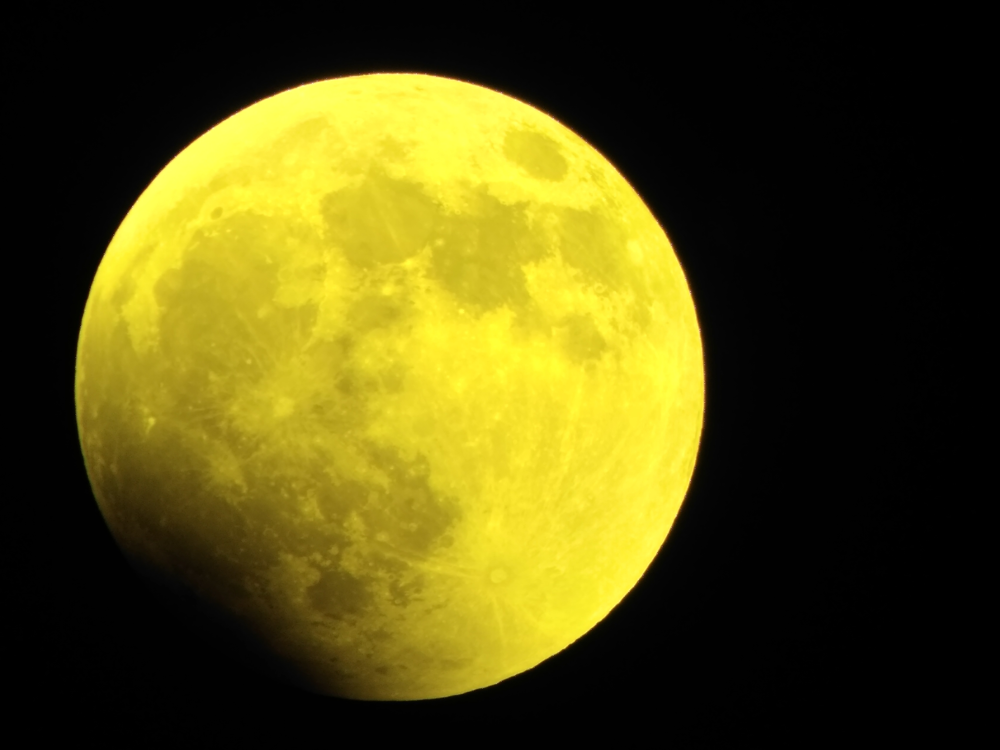 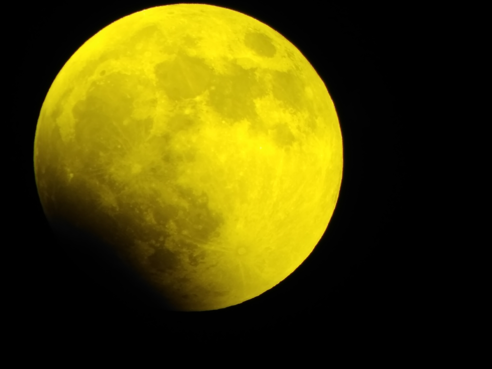
YCAS member Jim Smailing has taken some excellent pictures of the eclipsing Moon. These pictures were taken with the combination of a Motorola E5 plus cellphone, a Vankey cellphone telescope adapter mount, and an Orion ultrascopic 5mm eyepiece all attached to an Orion Skywatcher 120 f/8 acromatic refractor on an EG-3 equatorial mount with an Orion EQ-3M single axis drive. The first six photos were taken with a #15 yellow glass filter attached to the eyepiece.
The picture above is a stacked photo from a 30 second video processed with the free software PIPP and Autostakkkert!2.
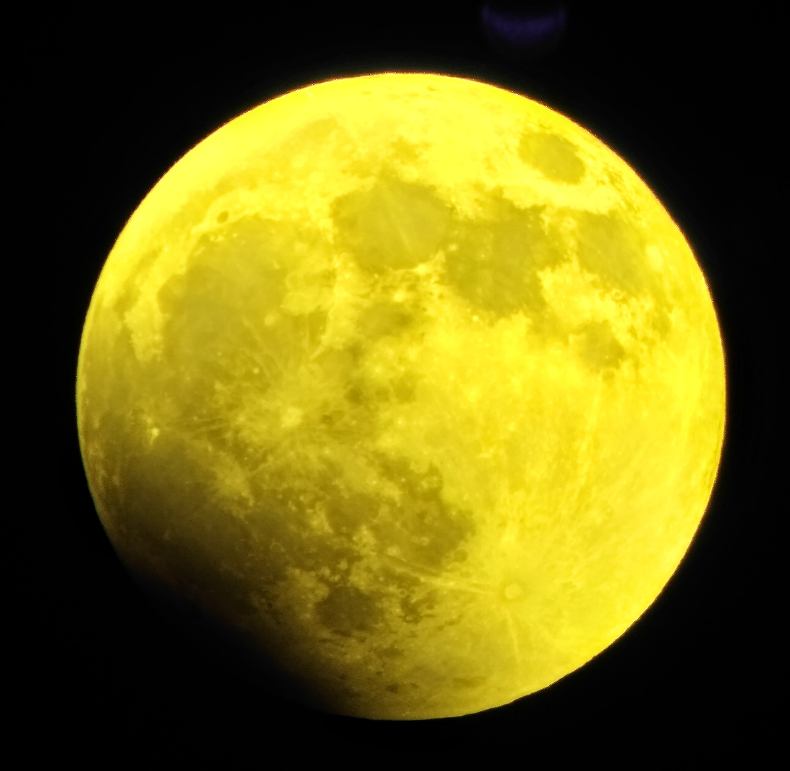 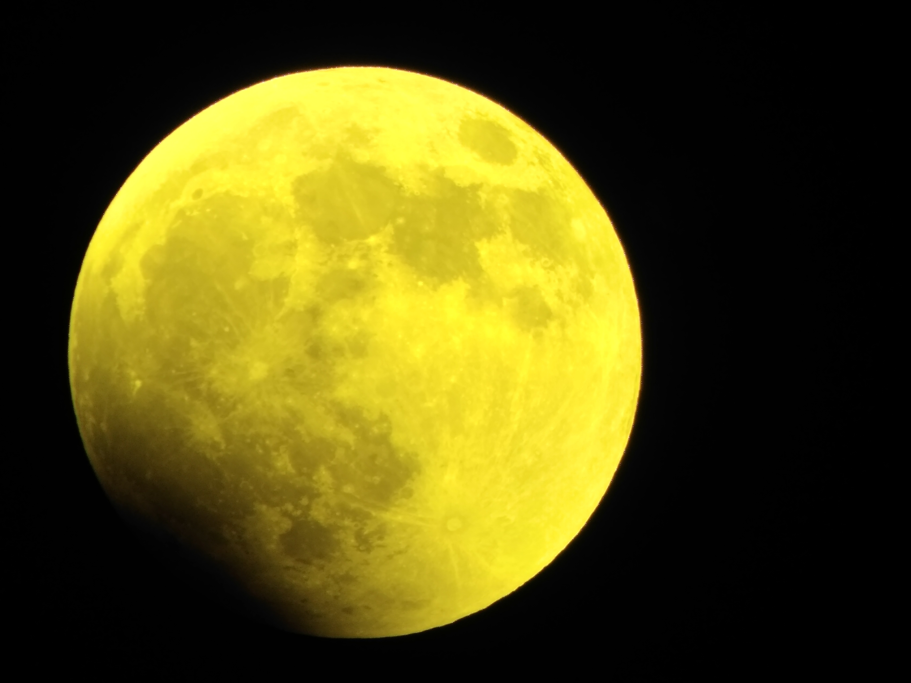 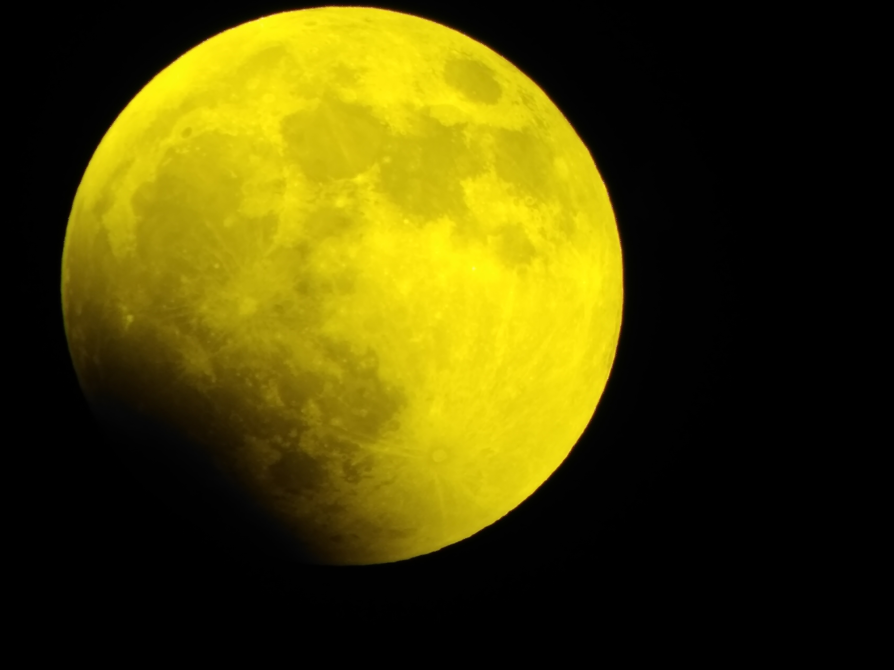
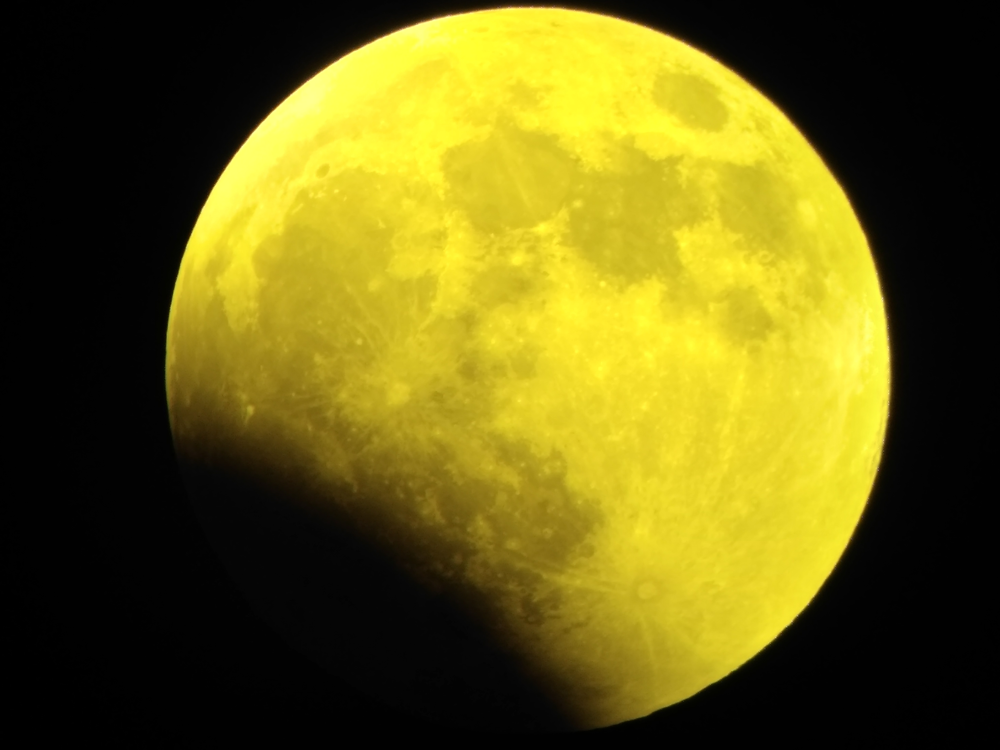 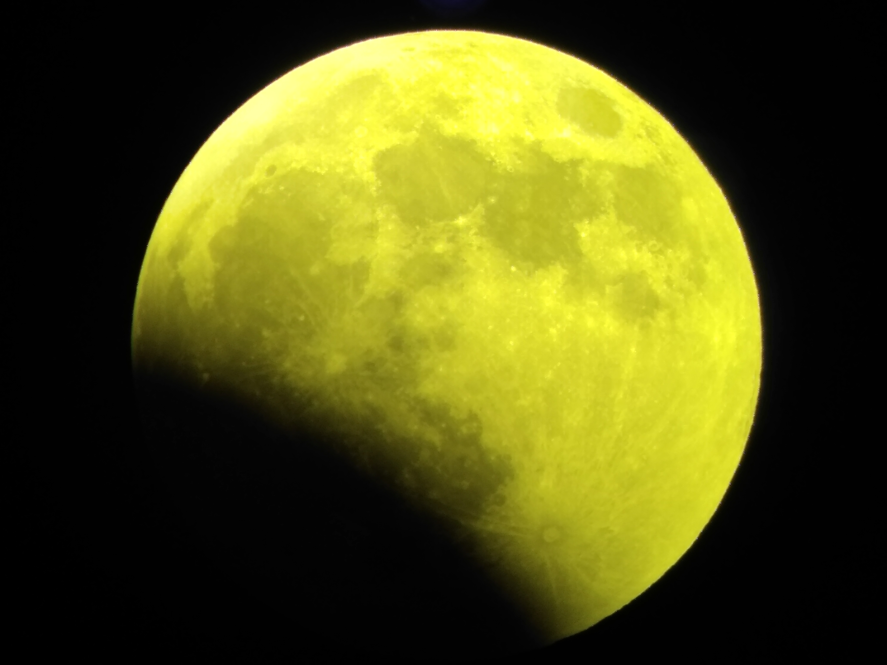 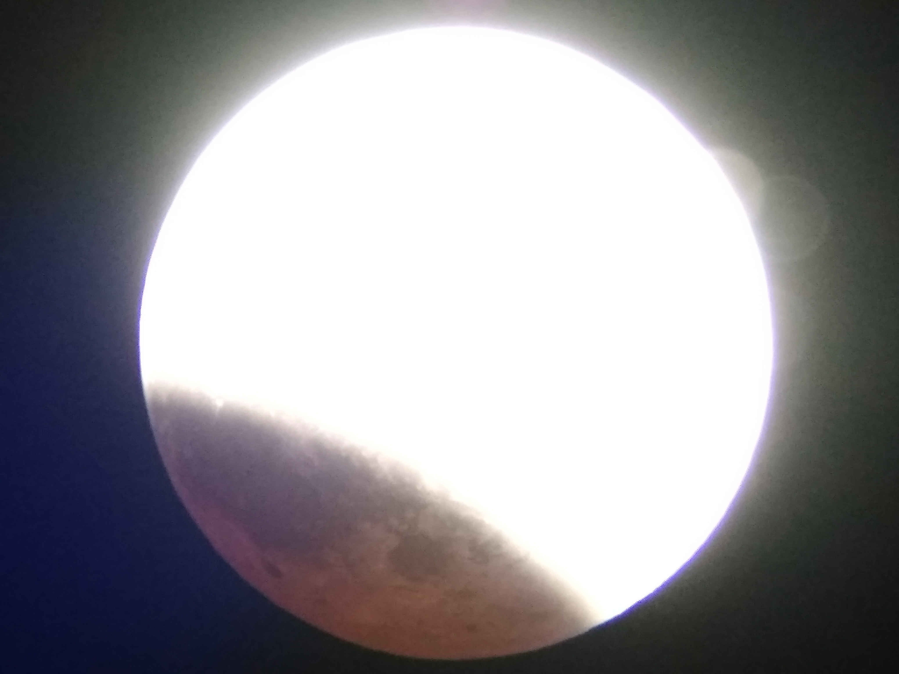
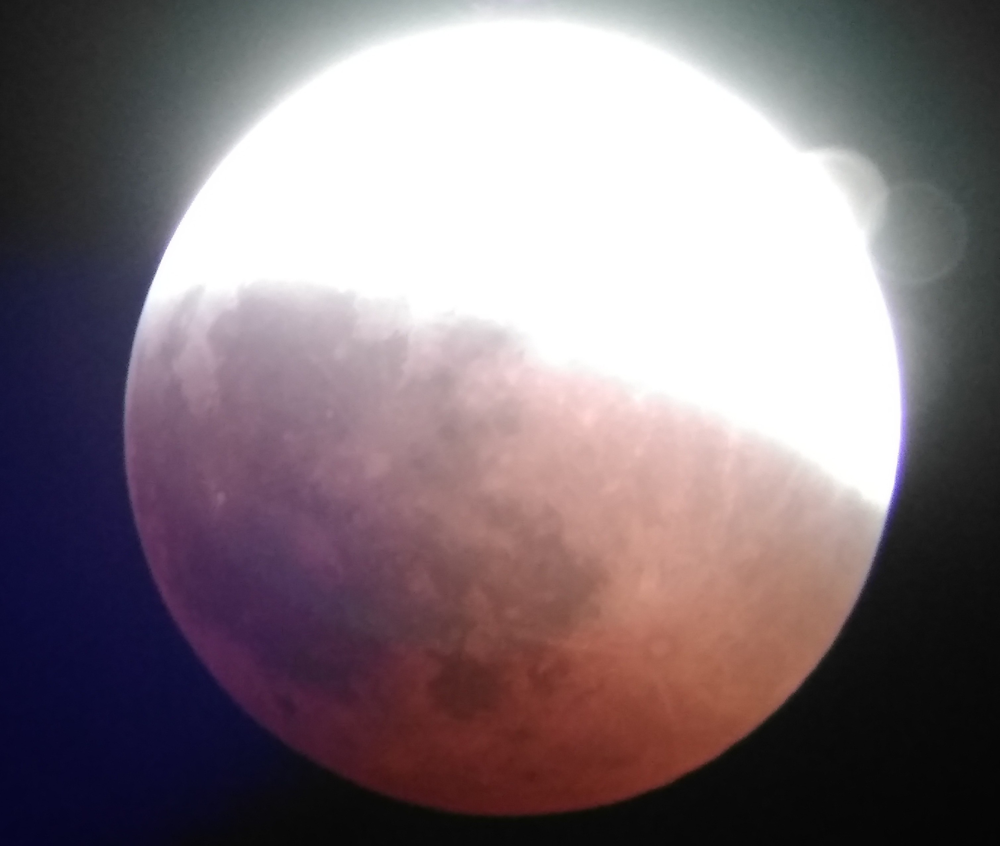 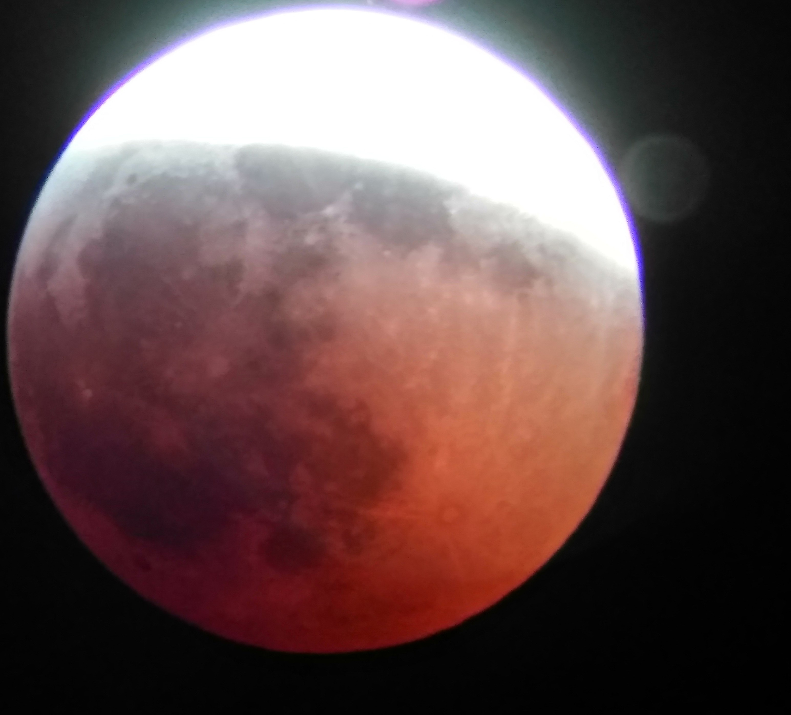 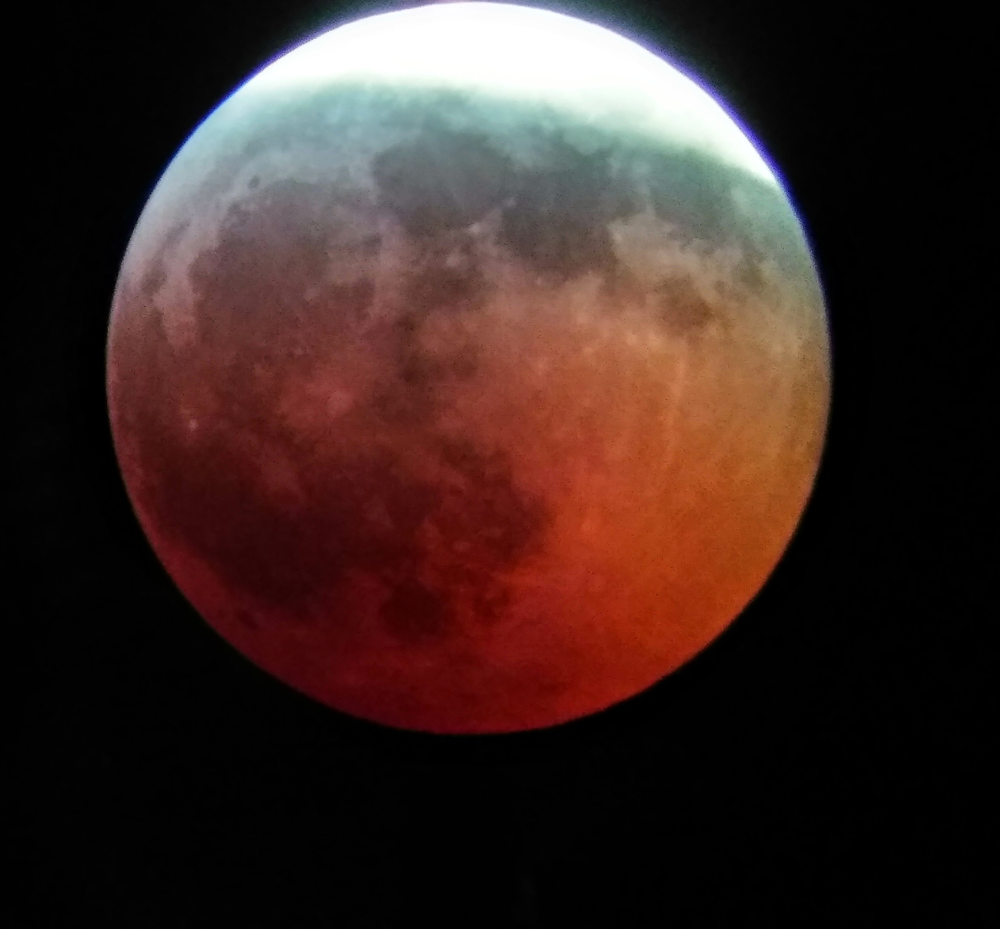
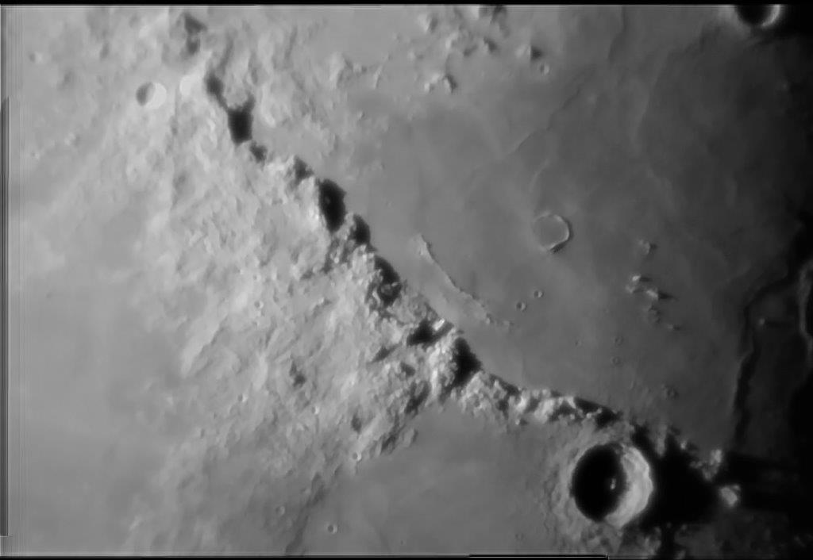 The crater Eratosthenes and the Apennine Mountains